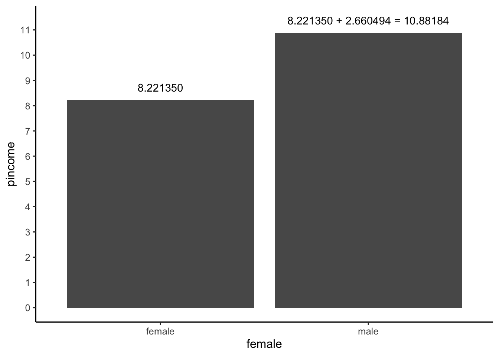
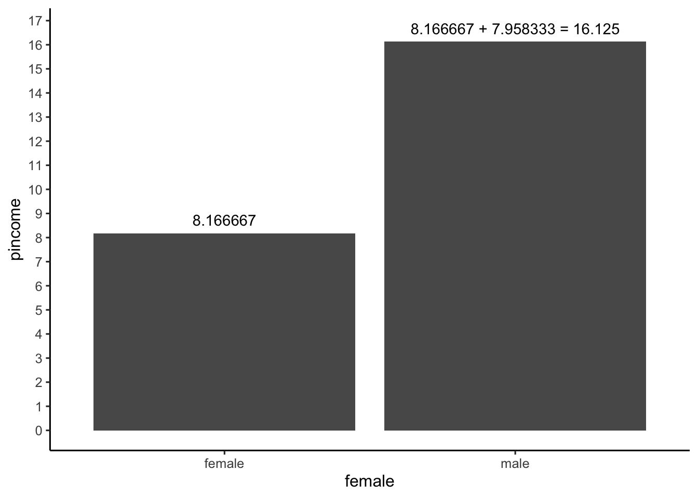
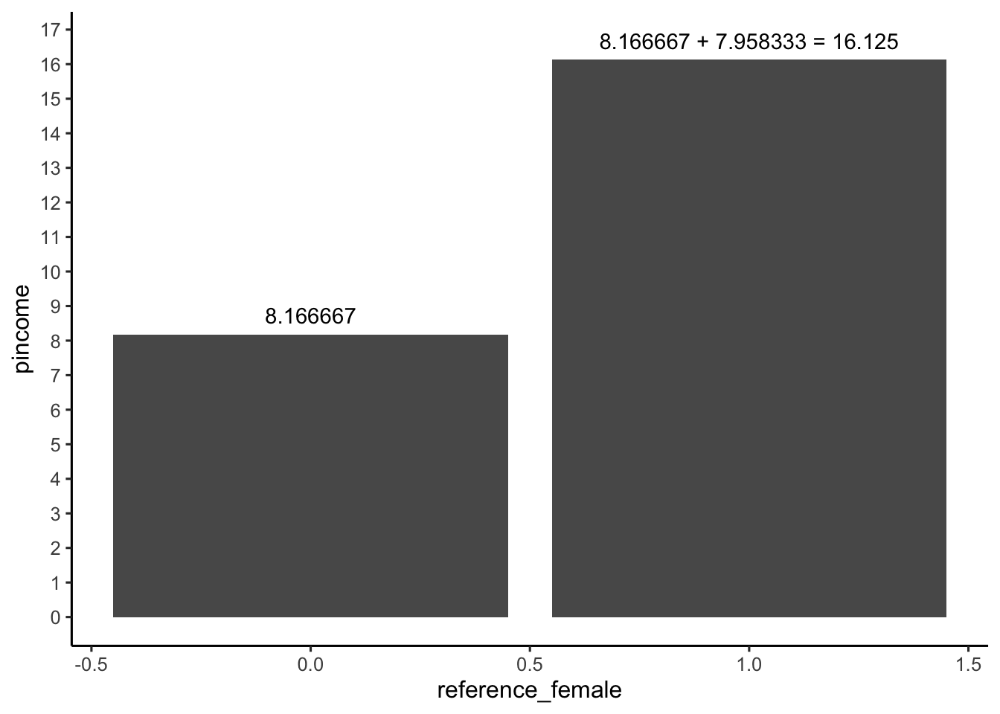
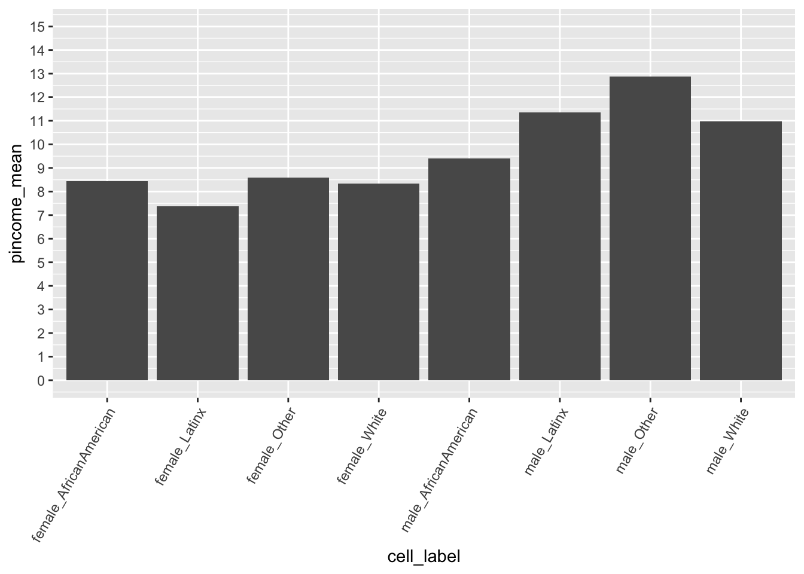

library(usethis) # use_github_file
library(tidyverse) # read_csv()
library(janitor) # clean_names()
library(skimr) # skim()
library(tidymodels) #tidy() glance()7 Indicator Variables
7.1 Required packages
The following CRAN packages must be installed:
| Required CRAN Packages |
|---|
| tidyverse |
| usethis |
| janitor |
| skimr |
| tidymodels |
7.2 Page 118 Single Categorical Predictor
7.2.1 Obtain data and save it to your computer
use_github_file(repo_spec = "https://github.com/johnhoffmannVA/LinearRegression/blob/main/GSS2018.csv",
save_as = "gss2018.csv")7.2.2 Load data from your computer
gss2018 <- read_csv("gss2018.csv") %>%
clean_names()7.2.3 Inspect data
gss2018 %>%
glimpse() Rows: 2,315
Columns: 28
$ id <dbl> 1, 2, 3, 4, 5, 6, 7, 8, 9, 10, 11, 12, 13, 14, 15, 16, 17, …
$ female <chr> "male", "female", "male", "female", "male", "female", "fema…
$ age <dbl> 43, 74, 42, 63, 71, 67, 59, 43, 62, 55, 59, 34, 61, 44, 41,…
$ cohort <dbl> 1975, 1944, 1976, 1955, 1947, 1951, 1959, 1975, 1956, 1963,…
$ race <chr> "White", "White", "White", "White", "AfricanAmerican", "Whi…
$ latinx <chr> "no", "no", "yes", "no", "no", "no", "no", "no", "no", "no"…
$ ethnic <chr> "White", "White", "Latinx", "White", "AfricanAmerican", "Wh…
$ educate <dbl> 14, 10, 16, 16, 18, 16, 13, 12, 8, 12, 19, 14, 13, 16, 12, …
$ childs <dbl> 0, 3, 2, 2, 0, 2, 6, 0, 4, 2, 2, 3, 2, 2, 2, 4, 0, 2, 2, 0,…
$ marital <dbl> 4, 3, 1, 1, 3, 2, 3, 4, 2, 1, 3, 3, 3, 1, 4, 2, 1, 1, 3, 4,…
$ fincome <dbl> 11, 12, 12, 13, 10, 10, 10, 12, 5, 12, 12, 11, 11, 12, 2, 1…
$ pincome <dbl> 11, 0, 22, 23, 0, 0, 12, 17, 2, 22, 23, 12, 0, 22, 0, 9, 20…
$ sei <dbl> 65.30, 14.80, 83.40, 69.30, 68.60, 69.30, 24.20, 23.70, 21.…
$ occprest <dbl> 47, 22, 61, 59, 53, 53, 48, 35, 35, 39, 72, 35, 45, 72, 28,…
$ attend <dbl> 5, 2, 2, 6, 8, 4, 7, 7, 0, 2, 4, 5, 0, 3, 0, 7, 1, 0, 4, 5,…
$ relig <dbl> 1, 2, 6, 1, 2, 2, 1, 2, 6, 1, 2, 1, 2, 2, 6, 2, 6, 4, 1, 2,…
$ fund <chr> "moderate", "moderate", "liberal", "liberal", "moderate", "…
$ owngun <chr> "no", "no", "no", "no", "yes", "yes", "no", "no", "no", "no…
$ legalmarij <chr> NA, "no", "yes", "no", "no", NA, "yes", "yes", "yes", "yes"…
$ cappunish <chr> "yes", "no", "yes", "no", "no", "yes", "yes", "yes", "yes",…
$ partyaff <dbl> 6, 3, 5, 3, 7, 3, 1, 6, 4, 2, 7, 2, 2, 1, 5, 4, 3, 4, 2, 5,…
$ polviews <dbl> 6, 4, 5, 4, 7, 3, 4, 5, 4, 4, 6, 4, 4, 3, 2, 5, 2, 6, 2, 4,…
$ spanking <dbl> 2, NA, 2, 3, NA, 3, NA, NA, 1, 2, 3, NA, 3, NA, 3, 2, 3, 3,…
$ lifesatis <dbl> NA, 87.91, NA, 78.23, 77.39, NA, 72.31, 80.96, NA, 71.21, N…
$ volunteer <dbl> 1, 1, 1, 3, 3, 1, 3, 1, 1, 2, 1, 2, 1, 2, 1, 1, 2, 1, 5, 1,…
$ confidence <dbl> 0, 10, 3, 3, 7, 1, 4, 2, 1, 4, 4, 1, 1, 3, 3, 1, 0, 3, 2, 3…
$ civliberty <dbl> 12, 11, 0, 0, 12, 12, 10, 6, 0, 0, 12, 0, 5, 4, 0, 9, 0, 3,…
$ watchtv <dbl> 3, NA, 1, 1, NA, 8, NA, NA, 4, 2, 3, 3, 7, NA, 7, 5, 3, 1, …Notice female is a chr variable.
7.2.4 Making female a factor (don’t skip this step)
We need to make female a factor variable. Then indicate that female is the reference. That is female = 0 and male = 1.
gss2018 <- gss2018 %>%
mutate(female = as_factor(female)) %>%
mutate(female = relevel(female, ref = "female"))See how female is now a factor:
gss2018 %>%
glimpse() Rows: 2,315
Columns: 28
$ id <dbl> 1, 2, 3, 4, 5, 6, 7, 8, 9, 10, 11, 12, 13, 14, 15, 16, 17, …
$ female <fct> male, female, male, female, male, female, female, male, fem…
$ age <dbl> 43, 74, 42, 63, 71, 67, 59, 43, 62, 55, 59, 34, 61, 44, 41,…
$ cohort <dbl> 1975, 1944, 1976, 1955, 1947, 1951, 1959, 1975, 1956, 1963,…
$ race <chr> "White", "White", "White", "White", "AfricanAmerican", "Whi…
$ latinx <chr> "no", "no", "yes", "no", "no", "no", "no", "no", "no", "no"…
$ ethnic <chr> "White", "White", "Latinx", "White", "AfricanAmerican", "Wh…
$ educate <dbl> 14, 10, 16, 16, 18, 16, 13, 12, 8, 12, 19, 14, 13, 16, 12, …
$ childs <dbl> 0, 3, 2, 2, 0, 2, 6, 0, 4, 2, 2, 3, 2, 2, 2, 4, 0, 2, 2, 0,…
$ marital <dbl> 4, 3, 1, 1, 3, 2, 3, 4, 2, 1, 3, 3, 3, 1, 4, 2, 1, 1, 3, 4,…
$ fincome <dbl> 11, 12, 12, 13, 10, 10, 10, 12, 5, 12, 12, 11, 11, 12, 2, 1…
$ pincome <dbl> 11, 0, 22, 23, 0, 0, 12, 17, 2, 22, 23, 12, 0, 22, 0, 9, 20…
$ sei <dbl> 65.30, 14.80, 83.40, 69.30, 68.60, 69.30, 24.20, 23.70, 21.…
$ occprest <dbl> 47, 22, 61, 59, 53, 53, 48, 35, 35, 39, 72, 35, 45, 72, 28,…
$ attend <dbl> 5, 2, 2, 6, 8, 4, 7, 7, 0, 2, 4, 5, 0, 3, 0, 7, 1, 0, 4, 5,…
$ relig <dbl> 1, 2, 6, 1, 2, 2, 1, 2, 6, 1, 2, 1, 2, 2, 6, 2, 6, 4, 1, 2,…
$ fund <chr> "moderate", "moderate", "liberal", "liberal", "moderate", "…
$ owngun <chr> "no", "no", "no", "no", "yes", "yes", "no", "no", "no", "no…
$ legalmarij <chr> NA, "no", "yes", "no", "no", NA, "yes", "yes", "yes", "yes"…
$ cappunish <chr> "yes", "no", "yes", "no", "no", "yes", "yes", "yes", "yes",…
$ partyaff <dbl> 6, 3, 5, 3, 7, 3, 1, 6, 4, 2, 7, 2, 2, 1, 5, 4, 3, 4, 2, 5,…
$ polviews <dbl> 6, 4, 5, 4, 7, 3, 4, 5, 4, 4, 6, 4, 4, 3, 2, 5, 2, 6, 2, 4,…
$ spanking <dbl> 2, NA, 2, 3, NA, 3, NA, NA, 1, 2, 3, NA, 3, NA, 3, 2, 3, 3,…
$ lifesatis <dbl> NA, 87.91, NA, 78.23, 77.39, NA, 72.31, 80.96, NA, 71.21, N…
$ volunteer <dbl> 1, 1, 1, 3, 3, 1, 3, 1, 1, 2, 1, 2, 1, 2, 1, 1, 2, 1, 5, 1,…
$ confidence <dbl> 0, 10, 3, 3, 7, 1, 4, 2, 1, 4, 4, 1, 1, 3, 3, 1, 0, 3, 2, 3…
$ civliberty <dbl> 12, 11, 0, 0, 12, 12, 10, 6, 0, 0, 12, 0, 5, 4, 0, 9, 0, 3,…
$ watchtv <dbl> 3, NA, 1, 1, NA, 8, NA, NA, 4, 2, 3, 3, 7, NA, 7, 5, 3, 1, …7.2.5 Group means
# We use as.data.frame() got get more decimials
gss2018 %>%
group_by(female) %>%
summarise(group_mean = mean(pincome)) %>%
as.data.frame() female group_mean
1 female 8.22135
2 male 10.881847.2.6 Regression (as per textbook)
lm7_1 <- lm(pincome ~ female,
data = gss2018)tidy(lm7_1)| term | estimate | std.error | statistic | p.value |
|---|---|---|---|---|
| (Intercept) | 8.221350 | 0.2479510 | 33.157156 | 0 |
| femalemale | 2.660494 | 0.3697567 | 7.195257 | 0 |
ggplot(data = gss2018,
mapping = aes(x = female,
y = pincome)) +
stat_summary(fun = "mean",
geom="bar") +
scale_y_continuous(breaks = seq(0, 15)) +
theme_classic(12)
7.2.7 Explanation Part 1: Fewer Cases
Let’s look at a subset of the data to understand what happened above. We’ll look at the first 20 rows of the data, and do the analysis again.
gss_small <- gss2018 %>%
select(pincome, female) %>%
slice_head(n = 20)print(gss_small)# A tibble: 20 × 2
pincome female
<dbl> <fct>
1 11 male
2 0 female
3 22 male
4 23 female
5 0 male
6 0 female
7 12 female
8 17 male
9 2 female
10 22 male
11 23 male
12 12 female
13 0 female
14 22 male
15 0 female
16 9 female
17 20 female
18 0 female
19 20 female
20 12 male gss_small <- gss_small %>%
mutate(female = as_factor(female)) %>%
mutate(female = relevel(female, ref = "female"))Let’s check out the group means for this smaller data set:
# We use as.data.frame() got get more decimials
gss_small %>%
group_by(female) %>%
summarise(group_mean = mean(pincome)) %>%
as.data.frame() female group_mean
1 female 8.166667
2 male 16.125000Now let’s do the regression:
lm7_small <- lm(pincome ~ female,
data = gss_small)tidy(lm7_small)| term | estimate | std.error | statistic | p.value |
|---|---|---|---|---|
| (Intercept) | 8.166667 | 2.506050 | 3.258781 | 0.0043602 |
| femalemale | 7.958333 | 3.962413 | 2.008456 | 0.0598397 |
ggplot(data = gss_small,
mapping = aes(x = female,
y = pincome)) +
stat_summary(fun = mean,
geom="bar") +
scale_y_continuous(breaks = seq(0, 20)) +
theme_classic(12)
7.2.8 Explanation Part 2: Numeric Coding
We create a column with 0 for female and 1 for male.
gss_numeric_small <- gss_small
gss_numeric_small$reference_female <-0
id <- gss_numeric_small$female == "male"
gss_numeric_small$reference_female[id] <- 1
print(gss_numeric_small)# A tibble: 20 × 3
pincome female reference_female
<dbl> <fct> <dbl>
1 11 male 1
2 0 female 0
3 22 male 1
4 23 female 0
5 0 male 1
6 0 female 0
7 12 female 0
8 17 male 1
9 2 female 0
10 22 male 1
11 23 male 1
12 12 female 0
13 0 female 0
14 22 male 1
15 0 female 0
16 9 female 0
17 20 female 0
18 0 female 0
19 20 female 0
20 12 male 1Now let’s do the regression again!
lm7_numeric_small <- lm(pincome ~ reference_female,
data = gss_numeric_small)tidy(lm7_numeric_small)| term | estimate | std.error | statistic | p.value |
|---|---|---|---|---|
| (Intercept) | 8.166667 | 2.506050 | 3.258781 | 0.0043602 |
| reference_female | 7.958333 | 3.962413 | 2.008456 | 0.0598397 |
ggplot(data = gss_numeric_small,
mapping = aes(x = reference_female,
y = pincome)) +
stat_summary(fun = mean,
geom="bar") +
scale_y_continuous(breaks = seq(0, 20)) +
theme_classic(12)
7.3 Page 120 Single Categorical t-test
t.test(pincome ~ female, gss2018)
Welch Two Sample t-test
data: pincome by female
t = -7.1248, df = 2123.5, p-value = 1.422e-12
alternative hypothesis: true difference in means between group female and group male is not equal to 0
95 percent confidence interval:
-3.392792 -1.928197
sample estimates:
mean in group female mean in group male
8.22135 10.88184 # We use as.data.frame() got get more decimials
gss2018 %>%
group_by(female) %>%
summarise(group_mean = mean(pincome)) %>%
as.data.frame() female group_mean
1 female 8.22135
2 male 10.881847.4 Page 122 Multiple Categorical Predictor
gss2018 <- gss2018 %>%
mutate(female = as_factor(female)) %>%
mutate(female = relevel(female, ref = "female"))gss2018 <- gss2018 %>%
mutate(ethnic = as_factor(ethnic)) %>%
mutate(ethnic = relevel(ethnic, ref = "White"))lm7_2 <- lm(pincome ~ female + ethnic, data = gss2018)library(tidymodels)
tidy(lm7_2)# A tibble: 5 × 5
term estimate std.error statistic p.value
<chr> <dbl> <dbl> <dbl> <dbl>
1 (Intercept) 8.34 0.286 29.1 3.61e-159
2 femalemale 2.64 0.370 7.14 1.25e- 12
3 ethnicLatinx -0.406 0.529 -0.767 4.43e- 1
4 ethnicAfricanAmerican -0.605 0.518 -1.17 2.43e- 1
5 ethnicOther 0.993 0.867 1.15 2.52e- 1# We use as.data.frame() got get more decimials
cell_means <- gss2018 %>%
group_by(female, ethnic) %>%
summarise(pincome_mean = mean(pincome)) %>%
as.data.frame()`summarise()` has grouped output by 'female'. You can override using the
`.groups` argument.print(cell_means) female ethnic pincome_mean
1 female White 8.345818
2 female Latinx 7.373134
3 female AfricanAmerican 8.447619
4 female Other 8.596774
5 male White 10.968345
6 male Latinx 11.356643
7 male AfricanAmerican 9.392157
8 male Other 12.880000 cell_label pincome_mean
1 female_White 8.345818
2 female_Latinx 7.373134
3 female_AfricanAmerican 8.447619
4 female_Other 8.596774
5 male_White 10.968345
6 male_Latinx 11.356643
7 male_AfricanAmerican 9.392157
8 male_Other 12.880000ggplot(data = cell_means,
mapping = aes(x = cell_label,
y = pincome_mean)) +
geom_col() +
scale_y_continuous(breaks = seq(0, 16, by = 1)) +
theme(axis.text.x = element_text(angle = 60,
hjust = 1)) 
# We use as.data.frame() got get more decimials
cell_means <- gss2018 %>%
group_by(female, ethnic) %>%
summarise(pincome_mean = mean(pincome)) %>%
as.data.frame()
print(cell_means)cell_means <- cell_means %>%
unite("cell_label", female, ethnic)
print(cell_means)